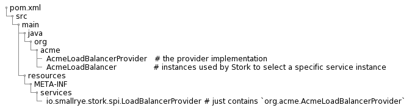

Implement your own load balancer mechanism
Stork is extensible, and you can implement your service selection (load-balancer) mechanism. Stork uses the SPI mechanism for loading implementations matching Load Balancer Provider interface
Dependency
To implement your Load Balancer Provider, make sure your project depends on:
<dependency>
<groupI>io.smallrye.stork</groupI>
<artifactId>smallrye-stork-api</artifactId>
<version>SNAPSHOT</version>
</dependency>
Implementing a load balancer provider
Stork uses the SPI mechanism for loading implementations matching Load Balancer Provider interface during its initialization. As a consequence, a load balancer provider implementation will contain:

The provider is a factory that creates an io.smallrye.stork.LoadBalancer instance for each configured service using this load balancer provider.
A type identifies each provider.
You will use that type in the configuration to reference the load-balancer provider you want for each service:
stork.my-service.load-balancer=acme
The first step consists of implementing the io.smallrye.stork.spi.LoadBalancerProvider interface:
1 2 3 4 5 6 7 8 9 10 11 12 13 14 15 16 17 18 19 20 | |
This implementation is straightforward.
The type method returns the load balancer provider identifier.
The createLoadBalancer method is the factory method.
It receives the instance configuration (a map constructed from all stork.my-service.load-balancer.attr=value properties)
Then, obviously, we need to implement the LoadBalancer interface:
1 2 3 4 5 6 7 8 9 10 11 12 13 14 15 16 17 18 19 20 21 22 23 24 | |
Again, this implementation is simplistic and just picks a random instance from the received list.
The final step is to declare our LoadBalancerProvider in the META-INF/services/io.smallrye.stork.spi.LoadBalancerProvider file:
examples.AcmeLoadBalancerProvider
Using your load balancer
In the project using it, don't forget to add the dependency on the module providing your implementation. Then, in the configuration, just add:
stork.my-service.service-discovery=...
stork.my-service.load-balancer=acme
Then, Stork will use your implementation to select the my-service service instance.